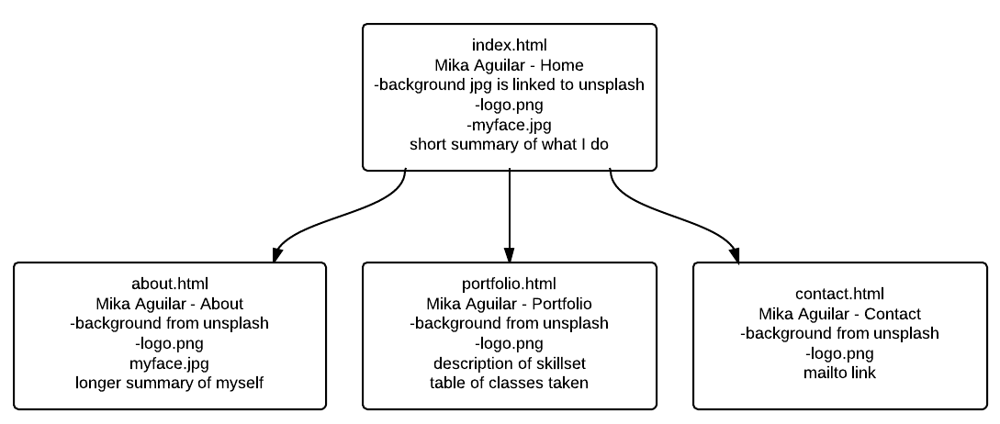

The goal of this website will be to display my skillset to potential employers as I look for a job as a junior developer. For the overall design, I'm going to try to utilize flat ui to keep a coherent look throughout.

The font I'm going to use is PT Sans Narrow. It's a google web font I think I originally started using because it is very similar to Helvetica Sans Narrow, but Helvetica is very much not free. The font is clean and easy to read. There are a few other Helvetica look alike fonts with different weights I may implement as well.
For colors, the background will be white, most of the font will be either white or black depending on what is behind it, and there will be bright primary colors (mostly #3399ff) where appropriate.
For images, I will use at the very least a large banner photo from something like unsplash.com (free to use high quality photos), and a photo of my face.
Drop shadows and gradients will be very minimal. Flat UI is used by a vast majority of google apps and windows 8. It's characterized by straight lines, bright primary colors, and subtle to no use of gradients. If I can do it in a timely manner, I'm going to pop a couple of jQuery elements in such as a navbar animation I've used before and maybe a way to automatically have the header clip to the top of the screen when you scroll past it. I haven't done that yet but I'd like to try.